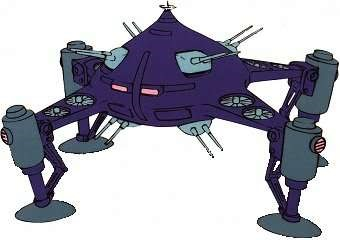

联邦篇：
RX-78-2 高达
简介
本机就是在因缘际会之下由阿姆罗驾驶而在GUNDAM历史上留下赫赫之名的初代高达，一提到“高达”这个词，大家首先联想起的想必也是它。本机是Ｖ计划里RX-78系列的二号机，也是GUNDAM史上第一次MS战的参与者，并在一年战争中后期创造了奇迹般的战果，被吉恩军驾驶员称为“白色恶魔”；然而本机得以称为“最强”的最大原因，却是驾驶员阿姆罗·雷的NT能力在战场上的充分运用。本机在阿·巴瓦·库会战中与夏亚所驾驶的MSN-02 吉恩号交战时双双被毁。
概要
机体番号： RX-78-2
机体代号(日文)： ガンダム 英文： GUNDAM 中文： 高达
出现作品： 机动战士高达（0079）
机体类型： 泛用多目的试作型MS
制造商： 地球联邦军
所属： 联邦
初次配备： U.C.0079
技术参数
内部环境： 只容纳驾驶员的标准核心调节器系统
尺寸： 头顶高：18.0米
全高：18.5米
重量： 本体重量：43.4吨
全备重量：60.0吨
装甲材料及结构： 月神钛合金（Lunar Titanium）
发电机出力： 1380KW
推进力： 24000KG×2+3750KG×2=55500KG
加速度： 0.93G
地上速度：165千米/时
装备及设计特征： 传感器探测有效半径：5700米
180°姿势变换所需时间：1.5秒（使用磁气覆膜技术后需1.1秒）
固定武装： 光束军刀×2，额定输出功率0.38MW；头部60mm火神炮×2
选用武装：
选用手部武器： 专用光束步枪；超级火箭筒；高达锤；超级锤；Super-Napalm；专用盾牌
RX-77-2 钢加农
简介
本机是RX计划中与RX-78等机体一起开发的中距离支援炮击用试作MS，与RX-78-2 高达、RX-75 钢坦克同属使用核心操作舱的同期开发产品。由于装甲厚重，运动性能较RX-78差。在设计本机时，联邦军考虑到宇宙要塞的攻略战是不可避免的，因此需要支援炮击型MS在宇宙步兵以通常兵装MS进行突入时予以火力支援，这个运用思想使得设计本机时以能承受敌弹攻击的厚重装甲和能进行制压射击的大火力为优先考虑目标。阿·巴瓦·库会战中，在支援炮火的协助下，相当多的陆战部队成功突入了要塞内部，证明本机的设计是非常成功的。
概要
机体番号： RX-77-2
机体代号(日文)： ガンキャノン 英文： Guncannon 中文： 钢加农
出现作品： 机动战士高达（0079）
机体类型： 炮击战用试作型MS
制造商： 地球联邦军
所属： 联邦
初次配备： U.C.0079
技术参数
内部环境： 只容纳驾驶员的标准核心调节器系统
尺寸： 头顶高：17.5米
全高：18.1米
重量： 本体重量：51.0吨
全备重量：70.0吨
装甲材料及结构： 月神钛合金（Lunar Titanium）
发电机出力： 1380KW
推进力： 2×22600KG+4×1650KG=51800KG
加速度： 0.74G
地上速度：78千米/时
装备及设计特征： 传感器探测有效半径：6000米
180°姿势变换所需时间：2.0秒
固定武装： 头部60mm火神炮×2；肩部240mm加农炮×2
选用武装： 肩部飞弹发射器×2
选用手部武器： 专用光束步枪
RX-75 钢坦克
简介
本机是RX计划中与RX-78等机体一起开发的长距离炮击支援用MS，本来制造了数架，但由于夏亚对SIDE7的奇袭，使得本机仅剩下一架，随后搬入强袭扬陆舰白色要塞，成为第十三独立部队的重要组成战力之一。两肩装备的120mm火药式低后座力加农炮的射程和威力都不错，作为火力支援型机体，本机得到了很高的评价。
概要
机体番号： RX-75
机体代号(日文)： ガンタンク 英文： Guntank 中文： 钢坦克
出现作品： 机动战士高达（0079）
机体类型： 炮击战用试作型MS
制造商： 地球联邦军
所属： 联邦
初次配备： U.C.0079
技术参数
内部环境： 标准核心调节器系统
尺寸： 头顶高：15.0米
全高：15.6米
重量： 本体重量：56.0吨
RGM-79 吉姆
简介
本机是利用RX计划所得到的技术而开发的联邦军最初的MS，“GM”是“GUNDAM Massproduction”的缩写，是RX-78 GUNDAM的简易生产机。一年战争后期开始大量生产本机，而为了能节省成本，删除了复杂的核心战斗机机制，装甲廉宜化（材料劣质化）。由于要赶及战事，粗劣的简化使性能和RX-78相差甚远，前期量产的42架机体故障频生，后期量产的288架情况略有好转。优点在于继承了RX-78的实战数据，就算是没经验的驾驶员也能有效地操控。配备低出力的光束手枪，光束剑等。
由于性能的相对低下，吉姆的真正价值往往要在以小队为单位以上的集团战斗中才能发挥出来。一般以三机为一小队、以十二小队编成一中队单位的基本战斗队型。交战时，多以一中队与10至20小队的铁球混合编队协同作战，接近战由GM应付，而铁球则以中、长距离作炮击支援。虽然这两种兵器都不及敌方，但都以数量补足。
大战后期，由本机型所衍生的更强化的改良型相继开发成功，成为联邦军的绝对主力。吉姆系列所发挥的“人”海战术屡屡成为联邦军胜利的保证。一年战争结束后，联邦军对本机进行了进一步的检讨，修正了大量设计上的毛病，作为次世代MS主力新型的衍生机体也持续开发着，使本机终于成为对后世量产MS影响深远的重要机种。
概要
机体番号： RGM-79
机体代号(日文)： ジム 英文： GM 中文： 吉姆
出现作品： 机动战士高达（0079）
机体类型： 泛用量产型MS
制造商： 地球联邦军
所属： 联邦
初次配备： U.C.0079
技术参数
内部环境： 标准式驾驶舱
尺寸： 头顶高：18.0米
全高：18.5米
重量： 本体重量：41.2吨
全备重量：58.8吨
装甲材料及结构： 钛合金（钛/陶瓷复合材料）
发电机出力： 1250KW
推进力： 24000KG×2+3750KG×2=55500KG
加速度： 0.94G
地上速度：102千米/时
装备及设计特征： 传感器探测有效半径：6000米
180°姿势变换所需时间：1.6秒
固定武装： 光束军刀×1，额定输出功率0.38MW；头部60mm火神炮×2
选用武装：
选用手部武器： 光束手枪；专用盾牌；90mm机关枪
RB-79 铁球
简介
本机为MS、战舰的支援用机，是将宇宙作业用机“SP-W03”追加了装甲及武器改造而成的小型MA。机体上只装备了“RX-75”用120mm低后座力加农炮一部。单体作战能力极为低下，但是本机与RGM-79 吉姆协同作战时的效果反而相当不错，又因为制造成本相当低廉，所以联邦军将本机大量生产并配备。由于性能不佳且很难操纵，本机在驾驶员中口碑不佳，有“铁棺材”的“美誉”，谁如果抽中了铁球就趁早写遗书吧。
概要
机体番号： RB-79
机体代号(日文)： ボール 英文： Ball 中文： 铁球
出现作品： 机动战士高达（0079）
机体类型： 量产型机动舱（Moblie Pod）
制造商： 地球联邦军
所属： 联邦
初次配备： U.C.0079
技术参数
内部环境： 标准式驾驶舱
尺寸： 全高12.8米
重量： 本体重量：17.2吨
全备重量：25.0吨
装甲材料及结构：
发电机出力： 400KW
推进力： 24000KG
加速度： 0.96G
装备及设计特征： 传感器探测有效半径：4000米
固定武装： 头部120mm低后座力加农炮
吉翁篇：
MS-05 扎古Ⅰ
简介
U.C.0074年2月，MS-05完成，并被正式命名为扎古（ザク）。MS-05在MS-04的基础上进行了改良，动力、制御关联的系统全部实现了内装；机体采用了新型的ZAS-MI8A引擎（05型后期采用了更新式的ZAS-MI8B型引擎）。MS-05的驾驶舱设置在机体的重心附近，由于开发出了高性能电脑，因此只需一名驾驶员便可完成全部的操作；出于密封的需要，驾驶舱内没有任何窗口，驾驶员只能依靠电视屏幕来进行具体的操作。除了电视摄像系统，设计人员还在机体头部的“单眼”内设置了激光及红外线探测系统，机体其他部分也安装了12架辅助摄像机，保证了能向驾驶舱内提供全周天视野。本机具有在米诺夫斯基粒子散布区域靠着有效视野作战的特征，这成为之后开发的所有机动战士的设计原点。泛用性高、具备量产性，机动战士的有效性都在这部机体上展现了出来。它的出现，为“巨炮大舰”的时代划上了终焉的句号。同年5月，MS-05的实战式样量产机完工，番号为MS-05A，名称为扎古Ⅰ。MS-05A 属于初期先行试作量产型，因此总共只生产了27架，全部配备到了基茜莉亚·扎比上校直辖的教导机动大队（3机1小队，9机1中队，27机正好是1个大队的编制）。由于是将试作机予以量产化，为了降低成本，对机体的装备进行了简化，采用的武器也有所不同，以热能斧、105mm扎古机枪和240mm扎古火箭炮为主。在鲁姆会战中因擒获了雷维尔而名扬天下的“黑色三连星”最初驾驶的机体即是本型机。
概要
机体番号： MS-05
机体代号(日文)： ザクⅠ 英文： ZakuⅠ 中文： 扎古Ⅰ
出现作品： 机动战士高达（0079）
机体类型： 泛用量产型机动战士
制造商： 吉恩尼克公司
所属： 吉恩
初次配备： U.C.0075
技术参数
内部环境： 未完成型标准式驾驶舱
尺寸： 头顶高：17.5米
重量： 本体重量：50.3吨
全备重量：65.0吨
装甲材料及结构： 超高张力钢（超硬钢合金）
发电机出力：
推进力：
加速度：
装备及设计特征：
固定武装：
选用武装：
选用手部武器： 105mm机枪，弹鼓供弹，100发1弹鼓，备用弹鼓收纳于后方裙甲上；120mm机枪，弹鼓供弹，100发1弹鼓，备用弹鼓收纳于后方裙甲上；280mm火箭筒，4发1弹舱，收纳于后腰装甲上；热能斧，收纳于侧面裙甲上
MS-06C 初期量产型扎古Ⅱ
简介
MS-06A型虽然性能出色，但武器种类的繁复制约了它的大规模量产。出于成本以及核装备的考虑，在基茜莉亚建议下对A型进行再度的改良，这就是MS- 06C 初期量产型扎古Ⅱ。C型的肩部装甲在A型的基础上又进行了改良（钉状肩甲），另外对机体所使用的反应炉和动力传送系统的性能也进行了提高。由于武器上采用了核弹头火箭筒，为了屏蔽放射线，机体还采用了多重空间装甲，大幅增加了机体的重量。U.C.0078年1月，MS-06C正式开始量产，前后总计生产了 236架，在一年战争初期的一周战争、鲁姆会战中大出风头，取得了压倒性的战果，是一年战争开战时吉恩军的主力机体。在南极条约签定后，核武器被禁止使用，从此以后，C型拆除了防核装置，不再生产，改为生产F型。
概要
机体番号： MS-06C
机体代号(日文)： ザクⅡ 英文： ZakuⅡ 中文： 初期量产型扎古Ⅱ
出现作品： 机动战士高达（0079）
机体类型： 机动战士
制造商： 吉恩尼克公司
所属： 吉恩
初次配备： U.C.0078
技术参数
内部环境： 未完成型标准式驾驶舱
尺寸： 头顶高：17.5米
重量：
装甲材料及结构： 超高张力钢（超硬钢合金）
发电机出力：
推进力：
加速度：
装备及设计特征：
固定武装：
选用武装：
选用手部武器： 120mm机枪，弹鼓供弹，100发1弹鼓，备用弹鼓收纳于后方裙甲上；280mm火箭筒，4发1弹舱，收纳于后腰装甲上；热能斧，收纳于侧面裙甲上
MS-06F 扎古Ⅱ
简介
U.C.0079年1月31日，吉恩与联邦签订了南极条约。条约明文禁止了核生化兵器的使用，因此去除了核装备、由C型改良而来的MS-06F 扎古Ⅱ就成为吉恩军的主力MS。狭义上所称的“扎古”，就是指MS-06F型。本型在一年战争时期总计生产了3000架以上，是吉恩军各型MS里量产数目最多的，对以后的MS开发也产生了非常深远的影响，夏亚、莱登等王牌均是驾驶本型机而成名的。
概要
机体番号： MS-06F
机体代号(日文)： ザクⅡ 英文： ZakuⅡ 中文： 扎古Ⅱ
出现作品： 机动战士高达（0079）
机体类型： 泛用量产型MS
制造商： 吉恩尼克公司
所属： 吉恩
初次配备： U.C.0079
技术参数
内部环境： 标准式驾驶舱（部分机体后来升级到全周天屏幕/线形坐椅式坐舱系统）
尺寸： 头顶高：17.5米
全高：17.5米
重量： 本体重量：58.1吨
全备重量：73.3吨
装甲材料及结构： 超高张力钢（超硬钢合金）
发电机出力： 951KW
推进力： 2×20500KG+2×1000KG=43000KG
加速度： 0.59G
地上速度：88千米/时
装备及设计特征： 传感器探测有效半径：3200米
180°姿势变换所需时间：1.7秒
固定武装：
选用武装： 脚部3连装导弹荚舱×2
选用手部武器： 120mm机枪，弹鼓供弹，100发1弹鼓，备用弹鼓收纳于后方裙甲上；280mm火箭筒，4发1弹舱，收纳于后腰装甲上；热能斧，收纳于侧面裙甲上；榴弹炮

MS-06S 指挥官用型扎古Ⅱ
简介
MS-06S是以MS-06F型为基础专门为中队指挥官以上的王牌驾驶员制造的机体。在技术改进方面，主要提高了推进剂的燃烧效率、制御系统的控制效率以及通信系统等。燃烧效率的提高不仅使机体的推力较普通的F型上升了30%，而且也提高了燃料的装载量。本型生产了100架左右，驾驶员中最为著名的当属 “赤色彗星”夏亚·阿兹纳布。
概要
机体番号： MS-06S
机体代号(日文)： ザクⅡ（指揮官機） 英文： ZakuⅡ Commander Type 中文： 指挥官用型扎古Ⅱ
出现作品： 机动战士高达（0079）
机体类型： 泛用量产型MS
制造商： 吉恩尼克公司
所属： 吉恩
初次配备： U.C.0079
技术参数
内部环境： 标准式驾驶舱
尺寸： 头顶高：17.5米
全高：18.0米
重量： 本体重量：56.5吨
全备重量：75.2吨
装甲材料及结构： 超高张力钢（超硬钢合金）
发电机出力： 976KW
推进力： 51600KG
加速度： 0.69G
装备及设计特征： 传感器探测有效半径：3200米
固定武装：
选用武装：
选用手部武器： 120mm机枪，弹鼓供弹，100发1弹鼓，备用弹鼓收纳于后方裙甲上；280mm火箭筒，4发1弹舱，收纳于后腰装甲上；热能斧，收纳于侧面裙甲上

MS-07B 老虎
简介
将YMS-07B予以量产就得到了MS-07B。除了部分装甲的形状略有不同之外，MS-07B与YMS-07B并没有什么大的区别。MS-07B是正式进行大规模量产的机体，大战期间约生产了200架左右，基本都是在月面的格拉纳达基地及北美的加利福尼亚基地的原MS-06J的生产线上生产的；老虎系后来的机体也基本都是自B型衍生出来的。与MS-06F一样，MS-07B也有专为指挥官设计的典礼型机，基茜莉亚少将的心腹马·克贝所驾驶的即为其中之一。此类机体在性能上与量产机并没有什么区别，只是头部有枪尖状的装饰（噱头而已，没有通信机能）以及机体全身的装甲上雕有花纹，看上去很有一番凝重感。
概要
机体番号： MS-07B
机体代号(日文)： グフ 英文： Gouf 中文： 老虎
出现作品： 机动战士高达（0079）
机体类型： 陆战用量产型MS
制造商： 吉恩尼克公司
所属： 吉恩
初次配备： U.C.0079
技术参数
内部环境： 标准型驾驶舱
尺寸： 头顶高：18.2米
全高：18.7米
重量： 本体重量：58.5吨
全备重量：75.4吨
装甲材料及结构： 超高张力钢（超硬钢合金）
发电机出力： 1034KW
推进力： 40700KG
加速度： 0.54G
地上速度：99千米/时
装备及设计特征：
固定武装： 指部5连装75mm机关炮
选用武装：
选用手部武器： 120mm机关炮；电热鞭；热能军刀；专用盾牌
MSM-03 战蟹
简介
由于MSM-03-1是在没有海的殖民地内开发的，在地球进行水中长时间、长距离航行测试时出现了双腕抗力增加等问题。为了解决这一问题，技术人员对 MSM-03-1进行了改良，采用了新型的四肢收纳变形系统，机体的番号也正式采用了MSM-03，开始量产化。战蟹配备之后，地球的制海权就完全落入了吉恩军的手中。
概要
机体番号： MSM-03
机体代号(日文)： ゴッグ 英文： Gogg 中文： 战蟹
出现作品： 机动战士高达（0079）
机体类型： 水陆两用量产型MS
制造商： 兹玛德公司
所属： 吉恩
初次配备： U.C.0079
技术参数
内部环境： 标准式驾驶舱（部分机体后来升级到全周天屏幕/线形坐椅式坐舱系统）
尺寸： 头顶高：18.3米
全高：18.3米
重量： 本体重量：82.4吨
全备重量：159.4吨
装甲材料及结构： 超高张力钢（超硬钢合金）、钛合金（钛/陶瓷复合材料）
发电机出力： 1740KW
推进力： 2×38000KG+3×15000KG=121000KG
加速度： 0.76G
水中速度：75节
装备及设计特征： 传感器探测有效半径：5400米
固定武装： 腹部偏光型MEGA粒子炮×2；腕部格斗用爪×2；背部鱼雷发射管×2
MSM-10 双面魔蟹
简介
MSM-10 双面魔蟹是MSM-04 龟霸的衍生机，主要用于上陆时的中、长距离支援作战。因为设计时正处于从MS到MA的过渡期，因此本机具有非常独特的前后对称形状。双面魔蟹的设计人员主要来自于兹玛德公司，另外也有少数兹温尼公司的技术人员参加了设计工作。双面魔蟹使用了出力较普通反应炉高2～3倍的反应炉，使其能进行9门MEGA粒子炮同时连射；同时，由于步行装置极为简单，双面魔蟹在陆地上主要依靠火箭引擎来移动，所以常有人评价上陆之后的双面魔蟹只能算是移动缓慢的炮台而已。由于是试作型机体，因此双面魔蟹只生产了3台，其中的2号机参加了加布罗攻略战并被RX-78-2 高达击破，1号机与3号机下落不明。
概要
机体番号： MSM-10
机体代号(日文)： ゾック 英文： Zock 中文： 双面魔蟹
出现作品： 机动战士高达（0079）
机体类型： 水陆两用试作型重MS
制造商： 吉恩公国军
所属： 吉恩
初次配备： U.C.0079
技术参数
内部环境： 标准式驾驶舱
尺寸： 头顶高：23.9米
全高：23.9米
重量： 本体重量：167.6吨
全备重量：229.0吨
装甲材料及结构： 超高张力钢（超硬钢合金）、钛合金（钛/陶瓷复合材料）
发电机出力： 3849KW
推进力： 253000KG
加速度： 1.11G
水中速度：63节
装备及设计特征：
固定武装： 头部光子微波激射枪；肩部偏光型MEGA粒子炮×8；腕部格斗用爪×2
MSM-04 龟霸
简介
MSM-04 龟霸是在MSM-07 魔蟹之后开发简易型水陆两用MS，由于可以使用MS-06F型的部件，实战配备的时间反而比MSM-07要早。本机虽然整体性能不高，但由于其反应炉经过开放式水冷改造，因此放出热量极少；机体的表面还涂有电波、红外线吸收剂，因此隐蔽性很高，常用于侦察或隐秘作战。大战末期加布罗攻略战中就有本型机成功潜入加布罗。本型机一共生产了60架左右。
概要
机体番号： MSM-04
机体代号(日文)： アッガイ 英文： Acguy 中文： 龟霸
出现作品： 机动战士高达（0079）
机体类型： 水陆两用量产型MS
制造商： 吉恩尼克公司
所属： 吉恩
初次配备： U.C.0079
技术参数
内部环境： 标准式驾驶舱
尺寸： 头顶高：19.2米
全高：19.2米
重量： 本体重量：91.6吨
全备重量：129.0吨
装甲材料及结构： 超高张力钢（超硬钢合金）
发电机出力： 1870KW
推进力： 109000KG
加速度： 0.85G
水中速度：53节
装备及设计特征：
固定武装： 头部105mm火神炮×4；6连装导弹发射器；腕部格斗用爪×2
选用武装：
选用手部武器： 扩散MEGA粒子炮；机关炮
MSM-07 魔蟹
简介
MSM -07 魔蟹是由MIP公司与MSM-03 战蟹同时期开发的水陆两用型MS，在得到实战数据后又对设计进行了变更（主要是对机体的陆地运动性能、格斗性能及火力进行了提高或充实），因此直到4月30日才正式完成，较战蟹整整迟了一个多月（MSM-03 战蟹是于3月27日 完成的）。设计人员从装甲素材及机体构造两方面同时下手进行改良，使魔蟹在装甲厚度不如战蟹的情况下整体防御力反而有所提高；同时，设计人员采用了改良型 小型高出力发电机，使机体内部空间得到了更合理的配置，另外还使魔蟹能够使用空冷式的冷却机构，加之机体背部采用了火箭式发动机，大幅延长了机体在陆地上 的行动时间及机动力。魔蟹在战斗中显示出的令人惊异的高性能，大受一线驾驶员的好评，因此吉恩军迅速地以加利福尼亚基地为中心开始量产魔蟹。
概要
机体番号： MSM-07
机体代号(日文)： ズゴック 英文： Z′Gok 中文： 魔蟹
出现作品： 机动战士高达（0079）
机体类型： 水陆两用量产型MS
制造商： MIP公司
所属： 吉恩
初次配备： U.C.0079
技术参数
内部环境： 标准式驾驶舱（部分机体后来升级到全周天屏幕/线形坐椅式坐舱系统）
尺寸： 头顶高：18.4米
全高：18.4米
重量： 本体重量：65.1吨
全备重量：96.4吨
装甲材料及结构： 超高张力钢（超硬钢合金）、钛合金（钛/陶瓷复合材料）
发电机出力： 2468KW
推进力： 2×35000KG+1×13000KG=83000KG
加速度： 0.86G
水中速度：103节
装备及设计特征： 传感器探测有效半径：5200米
固定武装： 头部240mm导弹发射器×6；腕部格斗用爪×2；腕部内藏式MEGA粒子炮×2
MSM-07S 后期型魔蟹
简介
从苏伊士运河占领作战起，吉恩军开始使用MSM-07S。MSM-07S是对MSM-07的反应炉出力、运动性以及装甲材质进行改善后得到的机体，一般配给了指挥官使用。由于后期MSM-07的生产线上生产的全是这种S型，所以习惯上又把MSM-07称为前期型魔蟹，把MSM-07S称为后期型魔蟹。一年战争后期，联邦军的新型对潜哨戒机投入使用后，本型机的返还率就大大地下降了。
概要
机体番号： MSM-07S
机体代号(日文)： ズゴック 英文： Z′Gok Commander Type 中文： 后期型魔蟹
出现作品： 机动战士高达（0079）
机体类型： 水陆两用量产型MS
制造商： MIP公司
所属： 吉恩
初次配备： U.C.0079
技术参数
内部环境： 标准式驾驶舱
尺寸： 头顶高：18.4米
全高：18.4米
重量： 本体重量：67.3吨
全备重量：95.2吨
装甲材料及结构： 超高张力钢（超硬钢合金）、钛合金（钛/陶瓷复合材料）
发电机出力： 2650KW
推进力： 92000KG
加速度： 0.97G
装备及设计特征： 传感器探测有效半径：5200米
固定武装： 头部240mm导弹发射器×6；腕部格斗用爪×2；腕部内藏式MEGA粒子炮×2
YMS-15 强人
简介
MS-15 强人系列是兹玛德公司推出的在“光束武器必须成为MS的标准配置”概念下开发的用以对抗联邦军RX系列MS的新型机体。因为旧式发电机的出力无法达到使用光束兵器的要求，而新型的发电机体积又相对较大，这样就要求设计人员必须对机体内部构造进行全新的设计；此外，RX-78-2 高达在战斗中所表现出凌驾于大魔之上的惊人的格斗性能很是刺激了兹玛德公司技术人员的自尊心，因此新型机是在“以近距离格斗战为主”的概念下进行设计的。
由于投入了兹玛德公司近乎全部的技术力量，强人系列的三架试作机——YMS-15 试作型强人在10月份就完工了。YMS-15 试作型强人的头顶高达到了19.9米，在当时的MS中可以说是鹤立鸡群（勇士的头顶高也不过才有19.2米）；驱动系统采用了刚刚在YMS-11上试验成功的Field Motor系统，磁气覆膜技术也得到了应用，大幅提高了YMS-15的运动性能；操作系统也继承了自YMS-11以来的优良传统，即使是新手也能很快上手。由于吉恩军才掌握能量CAP技术不久，在具体应用方面还没什么经验，因此首先制造出来的光束军刀的收束率要比其后研制出的YMS-14所使用的光束步枪低得多，这样就不可避免地加剧了发电机出力的耗费，其直接后果就是YMS-15无法同时搭载光束炮。不过YMS-15毕竟是一款以格斗战为主而设计的 MS，无法使用光束炮对它的影响并不是很大。在测试实验中，除了光束军刀之外，YMS-15所使用的武器还有MMP-78型120mm机枪及扎古火箭炮等 MS-06F所使用的武器。
虽然YMS-15有这么多的优点，但在月面格拉纳达基地的试验中还是败给了总体平衡性更好的YMS- 14。毕竟在宇宙空间中射击战要远多过格斗战，过度强调格斗性能不可避免会削弱机体其他方面性能，从而破坏机体的整体平衡性；光束军刀的威力虽然远胜旧式的热能武器，然而跟堪与战舰主炮的火力相媲美的光束步枪比起来却又差得太多；此外，新式的Field Motor驱动系统虽然能够大幅提高机体的运动性能，但与吉恩军MS生产线上惯用的流体脉冲系统又产生了兼容的问题，真正大规模进行量产的话必然会引起前线生产性和整备性的混乱。
YMS-15虽然没能得以大规模量产，但它那颇具中世纪骑士风味的外貌设计引起了突击机动军的马·克伯上校的兴趣。马·克伯上校在地球时所驾驶的是MS-07B的改良型典礼机；奥得萨作战失败之后，回到格拉纳达基地的马·克白上校给了还在选定试验中的YMS- 15很高的评价，并亲自选择了一架试作机，经兹玛德公司进行改装之后作为自己在宇宙中所使用的机体，这就是MS-15 强人。MS-15 强人的头部追加了指挥官专用的天线；机体各部分的装甲也进行了古典风格的处理。为了弥补火力的不足，技术人员还给强人追加了专用武器：12枚盾牌内藏式小型机雷爆弹及56枚 盾牌内藏式针状导弹，全部都是专为近战所设计的武器。机雷爆弹可以说是宇宙空间战斗中所使用的浮游机雷，同时发射后可滞空并自动形成一定距离的间隔，引爆 其中的一颗就会发生连锁式爆炸；超小型针状导弹也是依靠数量取胜的近战型武器，同时大量发射可以对敌人造成很大的伤害。马·克白上校驾驶本机向RX-78-2 高达挑战时，在充分发挥出机体性能后光荣战死。
对强人的骑士外形着迷不已的并非仅有马·克白一人，一些出身于吉恩名门的将校也对它很感兴趣，因此兹玛德公司将强人再加以改良之后，进行了小规模量产并配给了指挥官们使用。改良后的新机型被称为MS-15E GANNE，它的肩部采用了钉状肩甲而非原先的球状肩甲；头部和盾牌也跟强人略有不同；此外，它使用了兹玛德公司新研制出的光束长矛，威力较光束军刀又有所提高。在最后的阿·巴瓦·库攻防战中曾有本型机配属于位于N FIELD的宇宙空母多洛斯并参加了实战，但没有留下战果记录。
概要
机体番号： YMS-15
机体代号(日文)： ギャン 英文： Gyan 中文： 强人
出现作品： 机动战士高达（0079）
机体类型： 泛用试作型MS
制造商： 兹玛德公司
所属： 吉恩
初次配备： U.C.0079
技术参数
内部环境： 标准式驾驶舱
尺寸： 头顶高：19.9米
全高：19.9米
重量： 本体重量：52.7吨
全备重量：68.6吨
装甲材料及结构： 超高张力钢（超硬钢合金）
发电机出力： 1360KW
推进力： 56200KG
加速度： 0.82G
装备及设计特征： 传感器探测有效半径：5400米
固定武装： 光束军刀；盾牌内藏式小型机雷爆弹×12；盾牌内藏式针状导弹×56
选用武装： 专用盾牌
MS-09 大魔
简介
吉恩军高层对得到的YMS-09的测试数据相当满意，因此在测试结束之后的数周内，由设计人员对YMS-09的系统进行了微调整之后，就正式采用了MS -09的制式，开始进行先期量产。量产一号机于7月1日 完成。从外观上看，量产型与试作型的主要区别在于：量产型彻底摆脱了扎古的影子，而从试作型中我们还能隐约看出扎古的风格；量产型的头部传导管藏于机体内 部，而试作型的头部传导管是外露的；量产型位于背部和胫里部的推进器跟头部传导管一样采用了完全内藏式，而试作型采用的是便于散热的外露式，这样量产型的 散热性虽不及试作型，但防御性及防尘性大大提高了；量产型的热能军刀是斜插在背部的，而试作型的热能军刀则采用了水平放置，机体右侧设置了火箭炮专用的插 梢，左侧设置了PT-1型通信装置；量产型的胸部装备了接近战用的扩散光束炮，但由于此时吉恩军还未掌握能量CAP技术，扩散光束炮的威力相当低，只能起到牵制作用。MS-09型虽然在7月初就开始量产，但由于新机轴的气垫飞行器装置问题，耽误了驾驶员的机种转换训练，因此直到11月下旬完成了机种转换训练的驾驶员才配备到欧洲、亚洲及非洲各个战线上，使大魔没有完全发挥出应有的作用。MS-09的驾驶员中最有名的该是曾在鲁姆战役中擒获雷维尔将军的黑色三连星小队了，非常可惜的是，他们在与隶属于白色要塞的RX-78-2 高达交战时被全灭。
概要
机体番号： MS-09
机体代号(日文)： ドム 英文： Dom 中文： 大魔
出现作品： 机动战士高达（0079）
机体类型： 陆战用量产型MS
制造商： 兹玛德公司
所属： 吉恩
初次配备： U.C.0079
技术参数
内部环境： 标准式驾驶舱
尺寸： 头顶高：18.6米
全高：18.6米
重量： 本体重量：62.6吨
全备重量：81.8吨
装甲材料及结构： 超高张力钢（超硬钢合金）
发电机出力： 1269KW
推进力： 58200KG
加速度： 0.71G
地上速度：90千米/时；使用气垫装置时的最高速度：240千米/时
装备及设计特征： 传感器探测有效半径：5400米
固定武装： 胸部扩散光束炮
选用武装：
选用手部武器： 360mm火箭炮；热能军刀
MS-09R 加大魔
简介
一年战争中期，察觉到MS-06F性能已不足以承担宇宙战主力机体重任的吉恩军部决定着手开发次世代的宇宙空间用主力机体，吉恩的各大军火商纷纷行动起来，开始了新一轮的竞争。7月31日，兹玛德公司设计的MS-09R 加大魔（里克·多姆）最终击败了吉恩尼克的MS-06R-2，成为MS-14 勇士量产前吉恩宇宙军的主力MS。MS-09R 加大魔是从MS-09改修来的宇宙空间战式样机，与MS-09相比，MS-09R的推进器及喷嘴全部采用了热核喷气式引擎，扩大了机体的活动范围。自8月份起，吉恩公国MS-06F的生产线开始向MS-09R变更；进入9月份以后，生产线的调整基本结束；到了10月份，MS-09R开始配备于实战中。
概要
机体番号： MS-09R
机体代号(日文)： リック·ドム 英文： Rick Dom 中文： 加大魔
出现作品： 机动战士高达（0079）
机体类型： 宇宙战用量产型MS
制造商： 兹玛德公司
所属： 吉恩
初次配备： U.C.0079
技术参数
内部环境： 标准式驾驶舱
尺寸： 头顶高：18.6米
全高：18.6米
重量： 本体重量：43.8吨
全备重量：78.6吨
装甲材料及结构： 超高张力钢（超硬钢合金）
发电机出力： 1199KW
推进力： 2×22000KG+9×1000KG=53000KG
加速度： 0.67G
地上速度：110千米/时
装备及设计特征： 传感器探测有效半径：5400米
180°姿势变换所需时间：2.1秒
固定武装： 胸部扩散光束炮
选用武装：
选用手部武器： 360mm火箭炮；热能军刀
MS-09RS 夏亚专用型加大魔
简介
本机是在0079小说版中出现的夏亚专用的机体，番号为MS-09RS，是对MS-09R进行改良后得到的机体。MS-09RS使用了最新的磁气覆膜技术，提高了机体的反应能力；为了配合夏亚的NEWTYPE能力，技术人员还特地对机体的追踪性和机动力进行了强化；另外还更换了高出力的发电机，使机体可以搭载光束火箭炮。
概要
机体番号： MS-09RS
机体代号(日文)： リック·ドム（シャア·アズナブル専用機） 英文： Rick Dom Char Aznable Custom 中文： 夏亚专用型加大魔
出现作品： 机动战士高达（0079）小说版
机体类型： 宇宙战用量产型MS
制造商： 兹玛德公司
所属： 吉恩
初次配备： U.C.0079
技术参数
内部环境： 标准式驾驶舱
尺寸： 头顶高：18.6米
全高：18.6米
重量： 本体重量：43.8吨
装甲材料及结构： 超高张力钢（超硬钢合金）
发电机出力：
推进力：
加速度：
装备及设计特征：
固定武装： 胸部扩散光束炮
选用武装：
选用手部武器： 360mm火箭炮；热能军刀；专用光束火箭炮；80mm机关炮（附榴弹）
MS-14A 勇士
简介
本机是一年战争时期吉恩军最后的量产型MS。在战争的初期，称雄战场的是MS-06F；但随着联邦也开始生产MS来对抗吉恩军，06型的优势便逐渐丧失了；而09型的性能也不能完全满足在宇宙中进行大规模MS战的需要，因此，吉恩尼克公司以对MS战为前提开发了本机。战后，有战略家评论说：“如果勇士再提前数月配备到实战部队中去，战争的结局就不是现在这个样了”，由此可见本机的性能确实非同一般。MS-14A的腰部和脚部的裙甲内装有助推器，机动性和推力大大超过了以往任何机种。作为吉恩军的量产MS，标准装备中第一次装备了光束步枪。本机的性能较联邦军的量产MS“RGM-79 吉姆”高出许多。吉恩尼克公司作为开发MS的老厂家，充分显示了其雄厚的实力。但是，光束步枪的实用化过于迟缓，大战末期才刚投入量产。结果可想而知，本机还没来得及大展身手，大战就宣告结束了。
概要
机体番号： MS-14A
机体代号(日文)： ゲルググ 英文： Gelgoog 中文： 勇士
出现作品： 机动战士高达（0079）
机体类型： 泛用量产型MS
制造商： 吉恩尼克公司
所属： 吉恩
初次配备： U.C.0079
技术参数
内部环境： 标准式驾驶舱
尺寸： 头顶高：19.2米
全高：19.6米
重量： 本体重量：42.1吨
全备重量：73.3吨
装甲材料及结构： 超高张力钢（超硬钢合金）
发电机出力： 1440KW
推进力： 2×24500KG+5×2500KG=61500KG
加速度： 0.84G
地上速度：180千米/时
装备及设计特征： 传感器探测有效半径：6300米
180°姿势变换所需时间：1.5秒
固定武装： 双腕榴弹发射器
选用武装：
选用手部武器： 光束军刀；M-16型光束步枪；专用盾牌
MS-14S 指挥官用型勇士
简介
本机是继MS-06型之后成为吉恩军主力机种的MS-14A型的先行量产型机体，头部装备有通信机，初期番号为YMS-14，共生产了25架，全部配给了包括“赤色彗星”夏亚·阿兹纳布、“所罗门的噩梦”阿纳贝尔·卡多、艾里克·曼斯菲尔德、罗伯特·基里亚姆及“基迈拉队”在内的诸多王牌驾驶员在各地的实战中使用。其中最为有名的当属阿纳贝尔·卡多，他在所罗门一役中驾驶MS-14S，使用吉恩军最新完成的对舰用大型光束步枪击破联邦军3艘战舰和4艘巡洋舰，赢得了“所罗门的噩梦”的美名。本机属于先行量产型机体，因此机体的一些调整还未最终完成；然而由于本身优越的性能，使本机在战斗中取得了相当大的战果。联邦军的王牌驾驶员阿姆罗·雷在战后的回忆中也指出其击破的机体中属于MS-14S型的机体极为罕见。
概要
机体番号： MS-14S
机体代号(日文)： ゲルググ（指揮官用） 英文： Gelgoog Commander Type 中文： 指挥官用型勇士
出现作品： 机动战士高达（0079）
机体类型： 泛用量产型MS
制造商： 吉恩尼克公司
所属： 吉恩
初次配备： U.C.0079
技术参数
内部环境： 标准式驾驶舱
尺寸： 头顶高：19.2米
重量： 本体重量：42.1吨
装甲材料及结构： 超高张力钢（超硬钢合金）
发电机出力： 1440KW
推进力： 2×61500KG=123000KG
加速度：
装备及设计特征：
固定武装：
选用武装：
选用手部武器： 光束军刀；专用光束步枪；专用盾牌
MAX-03 阿萨姆
简介
本机是史上最初的MA，是通过对移动式对地攻击兵器G-87型月神坦克进行改修而得到的移动炮座，但最终因不能贯彻设计时的战术、运用思想而没能量产，仅作为实验兵器而试作而两架。由于装备有仍处于试验阶段的“米诺夫斯基粒子发生器”，所以本机能进行短时间浮游移动。为确保机体的飞行能力，设计人员没有对本机施加重装甲，因此极易被击破。武器方面，技术人员在机体的上下部各装备了4门2连装MEGA粒子炮，但为了保证“米诺夫斯基粒子发生器”的使用，发射次数受到了很大的限制。另外，技术人员还在机体底部装备了特殊武器“Leader”，这种武器在射出后可施放出强大的电磁波，从而破坏敌人的电子回路。原本这“Leader”是用来攻击战车等地面车辆的，不过事实证明用其攻击MS也十分有效。
概要
机体番号： MAX-03
机体代号(日文)： アッザム 英文： Adzam 中文： 阿萨姆
出现作品： 机动战士高达（0079）
机体类型： 试作型机动炮座
制造商： 吉恩公国军
所属： 吉恩
初次配备： U.C.0079
技术参数
内部环境： 驾驶员、副驾驶员多人驾驶舱
尺寸： 头顶高：25.0米
重量：
装甲材料及结构： 超高张力钢（超硬钢合金）
发电机出力：
推进力：
加速度：
装备及设计特征：
固定武装： 2连装MEGA粒子炮×8；Leader×3

MA-04X 扎古莱罗
简介
MS的开发理念是泛用性+运动性；与此相反，MA的开发理念是机动性+攻击力，即MA是一种“具有强攻击力的高速、高加速的机动兵器”。MA是吉恩军的特产，与信奉“数量压倒一切”的联邦军相比，国力及资源处于劣势的吉恩军，如光靠MS与联邦军硬拼，必然要吃亏，由此，吉恩军开发出了MA。MA的根本性质就是以一个作战单位，同时对抗多个作战单位来换取最大的战斗成果。但是到了后期，MA的开发走上了互相攀比性能、火力的歧路，往往是设计出了图纸，造几台试验机出来，但这时又看到别人的MA比自己的好，干脆就把这几台试验机废弃掉或者放进仓库封存，再着手开发新的MA。如此的浪费，使原本资源就不足的吉恩军更加雪上加霜，战后评论家说：“如果把开发MA的资金、资源用来多生产些诸如MS-06、MS-09系列的MS，可能战争的结果就是相反的了。”
这部MA-04X就是按照上述开发理念制造出的机体。机体安装有高输出扩散光束炮，由于所采用的发动机功率强大且冷凝器性能良好，因此光束炮可以经得长时间的连续使用；机体两侧装备有4连装导弹发射器；两手装备有专为MA开发的应用了复眼探测器及热能斧的镰形机械爪，使其格斗能力异常强大，通常一刀就能将一艘萨拉米斯级巡洋舰斩为两断。大推力的推进器提供了优良的机动力，但同时也造成了运动性低、回避攻击的能力极端低下。最终，由于不能保证运动性，MS -04X只制造了一台试验机，并未投入量产，而且预定将其废弃掉。本机后由迪米特里军曹驾驶出战，不幸时运不济，被联邦军的RX-78-2 高达击破。
概要
机体番号： MA-04X
机体代号(日文)： ザクレロ 英文： Zakrello 中文： 扎古莱罗
出现作品： 机动战士高达（0079）
机体类型： 宇宙战用试作型MA
制造商： MIP公司
所属： 吉恩
初次配备： U.C.0079
技术参数
内部环境： 标准式驾驶舱
尺寸： 全高：25.0米
重量： 全备重量：185.0吨
装甲材料及结构： 超高张力钢（超硬钢合金）
发电机出力：
推进力：
加速度：
装备及设计特征：
固定武装： 口部扩散光束炮；腕部格斗用机械爪×2；侧部4连装导弹发射器×2
MA-05 比格罗
简介
MA-05 比格罗是一年战争末期吉恩军配备的、以高速战斗为主体、擅长一击脱离战法的高机动型宇宙战用MA杰作机。本机的原型是MIP公司制造的试作机MIP- X1，在新兵器招标会的竞争中败给了吉恩尼克公司制造的ZI-XA3后，鉴于它在宇宙空间具有良好的机动性，就重新进行了开发。比格罗拥有令人惊异的超高机动性，驾驶本机的驾驶员必须保证能够承受住其强大G力，所以均是经过严格挑选的优秀驾驶员。机体上装有两只用于接近战的机械臂，具有有限的AMBAC能力，可发挥机动灵活的攻击力，稍后生产的MAM-07也是使用的此种机械臂。本机的推进器使用了两台强力热核火箭发动机，机首装备了一门高出力大型 MEGA粒子炮；机首左右两侧还各装备了4连装导弹发射器；搜索敌人用的装置与MS一样，采用了自动搜寻系统，提高了在米诺夫斯基粒子散布状态下的搜索能力。该机对舰攻击力较强，生产数量甚少。
概要
机体番号： MA-05
机体代号(日文)： ビグロ 英文： Bigro 中文： 比格罗
出现作品： 机动战士高达（0079）
机体类型： 宇宙战用量产型MA
制造商： MIP公司
所属： 吉恩
初次配备： U.C.0079
技术参数
内部环境： 标准式驾驶舱
尺寸： 全高：23.6米
全长：45.5米
重量： 本体重量：125.5吨
全备重量：229.8吨
装甲材料及结构： 超高张力钢（超硬钢合金）
发电机出力： 17800KW
推进力： 136100KG
加速度： 0.59G
装备及设计特征： 传感器探测有效半径：111000米
固定武装： 机首部大型MEGA粒子炮；4连装导弹发射器×2；格斗战专用机械爪×2
MAN-03 布劳·布罗
简介
吉恩公国军军部为了扭转不利的战况，决定投入应用弗拉纳冈博士所提倡的新人类理论而诞生的新兵器。于是，从0079年秋天起，以突击机动军为中心开始开发新型的塞可缪系统，这种系统能通过脑波达到遥控的目的，使机动兵器即使处于米诺夫斯基粒子状态下通讯与操作也不会受到影响。
MAN -03 布劳·布罗即是应用了塞可缪系统而由弗拉纳冈机构开发出的最初的机动兵器，也是新人类专用机。本机以回收驾驶员和智能系统的实战数据为第一任务，能够分离成3个独立的部分，每一部分都有自航能力，驾驶舱还应用了发生误爆的保护措施；机体的大小与小型宇宙艇相当，远大于一般的MS。设计人员在由机体中央向四周延伸的机械臂上装备了4门有线制御式MEGA粒子炮，可在塞可缪系统控制下发动全方位的攻击。本机在与联邦军交战后被击毁，但数据则反馈到了其后的 MSN-02 吉恩号上。
概要
机体番号： MAN-03
机体代号(日文)： ブラウ·ブロ 英文： Braw Bro 中文： 布劳·布罗
出现作品： 机动战士高达（0079）
机体类型： NT专用试作型MA
制造商： 弗拉纳冈机构
所属： 吉恩
初次配备： U.C.0079
技术参数
内部环境： 标准式驾驶舱
尺寸： 头顶高：60.2米
全高：62.4米
重量： 本体重量：1735.3吨
全备重量：2602.6吨
装甲材料及结构： 超高张力钢（超硬钢合金）
发电机出力： 74000KW
推进力： 1760000KG
加速度： 0.68G
装备及设计特征： 传感器探测有效半径：156000米
固定武装： 有线制御式MEGA粒子炮×4
MAN-08 艾尔美斯
简介
本机是弗拉纳冈机构研制的第2种新人类专用MA。与前面的MAN-03 布劳·布罗不同，MAN-08 艾尔美斯是一架真正的实战用机，固定武器有2门MEGA粒子炮，但这不过是自卫用的武器，主攻武器是装在机体后部的12组无线智能诱导式攻击单元 “Bit”。在塞可缪系统的控制下，驾驶员可以遥控“Bit”，使用光束炮长距离远隔攻击目标。因此，本机的驾驶员必须具有较高的NT能力。由夏亚·阿兹纳布上校发掘的NEWTYPE、具有很高NT能力战争孤儿拉拉·辛少尉操纵本机参加了实战，在联邦军控制的所罗门宙域击沉了数艘联邦军舰只，一时间被联邦军士兵称为“所罗门的亡灵”。
概要
机体番号： MAN-08
机体代号(日文)： エルメス 英文： Elmeth 中文： 艾尔美斯
出现作品： 机动战士高达（0079）
机体类型： NT专用试作型MA
制造商： 弗拉纳冈机构
所属： 吉恩
初次配备： U.C.0079
技术参数
内部环境：
尺寸： 头顶高：47.7米
全高：85.4米
重量： 本体重量：163.7吨
全备重量：291.8吨
装甲材料及结构： 超高张力钢（超硬钢合金）
发电机出力： 14200KW
推进力： 645200KG
加速度： 2.21G
装备及设计特征： 传感器探测有效半径：245000米
固定武装： MEGA粒子炮×2
选用武装：
选用手部武器：
远程武器： Bit×12

MA-08 大扎姆
简介
以宏扬吉恩军的威信而开发的对要塞攻击用巨大MA，就是这部MA-08。本来MA-08是用来攻占地球联邦军总部——加布罗基地用的，但是由于制造计划的延误而放弃了，最后在所罗门攻防战中被配备到了实战之中，而驾驶员则是吉恩宇宙军司令——多兹鲁中将。
在一年战争中，MA-08作为一种机动兵器，不论体积还是火力，都雄居榜首。机体中央装备有一门一炮就能击沉一艘战舰的强力大型偏转MEGA粒子炮，还内藏有能做全周围攻击的28门MEGA粒子炮。两只脚上还各装有3枚爪型对空防御用导弹。这部机体最奇特的地方是其第一次搭载了I FIELD发生器，此发生器能在机体周围形成一层对光束用电磁波膜，能将战舰主炮级光束兵器所发射的光束有效的化解。这样的装备，使得它的攻击力和防御力都无懈可击，但同时也带来了一个重大问题。由于采用了4台45000KW的大功率发电机，冷却能力满足不了要求，使MA-08的作战时间限定在20分钟以内。吉恩军曾计划将MA-08投入量产，预定在大气圈内飞行，但终因吉恩军的迅速溃败而未能实现。在所罗门攻防战中，本机的I FIELD发生器多次化解了联邦军战舰的光束炮攻击，使得本机一举创下击破联邦军4艘战舰（其中包括提安姆将军所搭乘的旗舰“泰坦号”）、8艘巡洋舰及超过20架MS的辉煌战果，但最终被阿姆罗少尉的特攻所击破。
概要
机体番号： MA-08
机体代号(日文)： ビグ·ザム 英文： Big Zam 中文： 大扎姆
出现作品： 机动战士高达（0079）
机体类型： 对舰对要塞战用试作型重MA
制造商： 吉恩公国军
所属： 吉恩
初次配备： U.C.0079
技术参数
内部环境： 1名指挥官、2名操作员的标准式驾驶舱
尺寸： 全高：59.6米
重量： 本体重量：1021.2吨
全备重量：1936.0吨
装甲材料及结构： 超高张力钢（超硬钢合金）
发电机出力： 140000KW
推进力： 580000KG
加速度： 0.30G
装备及设计特征： 传感器探测有效半径：134000米
固定武装： 机首部大型MEGA粒子炮；胸部对空MEGA粒子炮×28；头部对空导弹×6；胸部105mm火神炮×2；脚部格斗用机械爪×2；I FIELD发生器×2
MSN-02 吉恩号
简介
无论是MS-06Z还是MSN-01，都只能算是实验用机体；只有继承了它们实验数据的MSN-02 吉恩号才称得上是吉恩军真正的NEW TYPE专用MS。MSN-02 吉恩号也是吉恩军最后投入实战的MS，至阿·巴瓦·库会战之际腰部以下仍未完工。作为吉恩的象征，设计人员对它寄予了很高的期望。与大多数MS不同的是，本机的驾驶舱设计在头部，还可兼做逃生装置，能进行独立的航行。武器方面，本机与MS-06Z及MSN-01一样在双腕装备了可对敌人进行全方位攻击的5 连装有线制御式MEGA粒子炮；此外，头部及腹部也装有MEGA粒子炮，在对MS战时具有压倒性的火力。一年战争末期阿·巴瓦·库会战时，缺少腿部及部分装甲、尚在当地的MS制造工厂内处于组装调试状态的MSN-02被夏亚上校驾驶出战，击破了4艘战舰及18架MS之后，与驾驶RX-78-2 高达的联邦军阿姆罗少尉进行了一场殊死搏斗，最终两机同归于尽。设计方案中的装备了腿部组件的MSN-02被称作“完美吉恩号”，其全高达到30多米，是普通MS的2倍，能以压倒性的高机动性、大火力进行战斗，可以说是第四世代MS的先驱。
概要
机体番号： MSN-02
机体代号(日文)： ジオング 英文： Zeong 中文： 吉恩号
出现作品： 机动战士高达（0079）
机体类型： NT专用试作型重MA
制造商： 吉恩公国军
所属： 吉恩
初次配备： U.C.0079.12.31
技术参数
内部环境： 标准式驾驶舱
尺寸： 未完成体头顶高：17.3米
重量： 本体重量：151.2吨
全备重量：231.9吨
（完成体：本体重量234.2吨；全备重量421.2吨）
装甲材料及结构： 超高张力钢（超硬钢合金）
发电机出力： 9400KW
推进力： 187000KG
加速度： 0.81G
装备及设计特征： 传感器探测有效半径：81000米
固定武装： 口部MEGA粒子炮；腹部MEGA粒子炮×2；腕部5连装有线制御式MEGA粒子炮×2